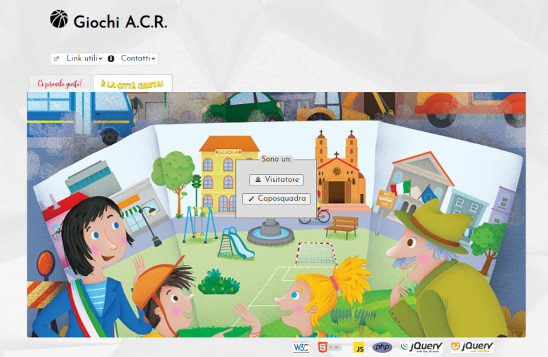
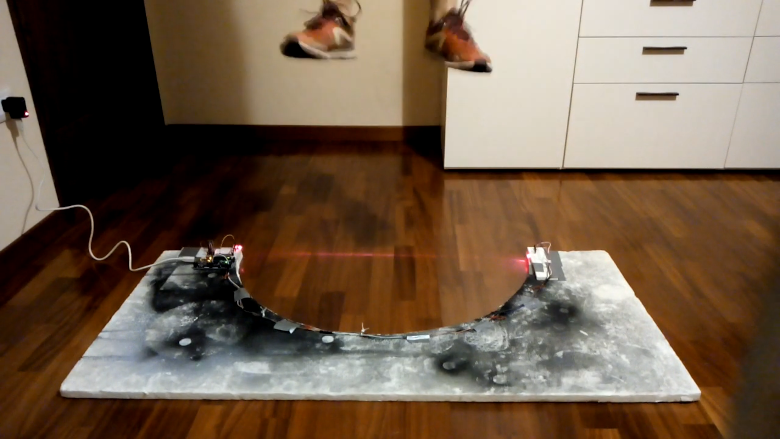

Projects
Personal
Setup
Ricing, dotfiles, wallpapers and more from my current setups. →

FoxySeta
The repository containing my public profile's README. →
foxyseta.github.io
My personal webpage on GitHub Pages. →
Codingame
My submissions for Codingame competitions. →
Grades to Reports
A bot designed specifically to fill in students' reports (from Google Sheets to Google Docs). →
Telegrindr
A Telegram bot to bring a Grindr-like experience to your groups. Except for the freemium policy, that is. →
High School
ACR Games Manager
A web application DBMS for Sunday school (aka Azione Cattolica Ragazzi) meant to work as a scoreboard for children playing games in teams. →
Bosco Test
Bosco tests are designed to assess the morphofunctional characteristics of one's legs muscles as well as their neuromuscular skills. →
Coriana
A Telegram bot interpreter who can work with a finite number of states. They're currently impersonating Coriana, a virtual assistant for families visiting my old high school. →
Leo da Vinci
A Telegram bot meant to help high-school students prepare for their final oral exam. →
Pandemic Simulator
A scientifically inaccurate 3D pandemic simulator. →

App Oriani
A mobile app for the students at Liceo Scientifico "Alfredo Oriani" in Ravenna. →
University
First Year
unibo-11925-architettura-degli-elaboratori
Exercises and projects for the University of Bologna Computer Architecture course (a.y. 2020-21). →
Mastro Nando
A Visual Studio Code extension for Nand2Tetris development based on Zohar Lee's "Nand2Tetris Tools". →
unibo-93283-logica-per-l-informatica
Exercises for the University of Bologna Logic for Computer Science course (a.y. 2020-21). →
Midlands Graduate School 2021
Exercises for the Midlands Graduate School (MGS) in the Foundations of Computing Science (2021). →
unibo-00819-programmazione
Exercises for the University of Bologna Programming course (a.y. 2020-21). →
unibo-37635-algoritmi-e-strutture-di-dati
Exercises for the University of Bologna Algorithms and Data Structures course (a.y. 2020-21). →
🅼🐵🅽🅺ey
Project for the University of Bologna Algorithms and Data Structures course (a.y. 2020-21). →

Second Year
unibo-02023-calcolo-numerico
Exercises and projects for the University of Bologna Numerical Computing course (a.y. 2021-22). →
unibo-93315-reti-di-calcolatori
Exercises for the University of Bologna Computer Networks (a.y. 2021-22). →
unibo-08574-sistemi-operativi
Exercises for the University of Bologna Operative Systems (a.y. 2021-22). →